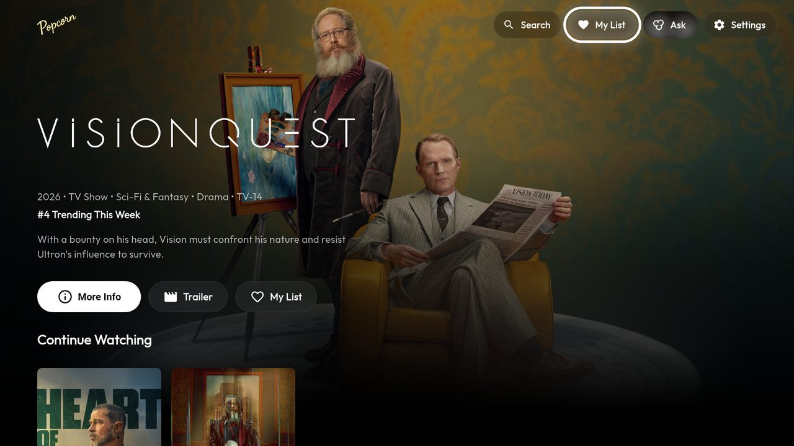

Popcorn on your TV. No sign-up. No ads.
Android TVGoogle TVFire TV
Download for TVOn your TV, open Downloader and type:
popcorn-organization.github.io/popcorn/tv

Installing it
-
Get Downloader
It's free in your TV's app store. Search for Downloader, the orange one by AFTVnews.
-
Let it install apps
A one-time switch on the TV:
Google TV & Android TVSettings → System → About: press OK on Android TV OS build seven times. Then Settings → Apps → Security & restrictions → Unknown sources: turn on Downloader.
Fire TVSettings → My Fire TV → About: press OK on your Fire TV's name seven times. Then My Fire TV → Developer options → Install unknown apps: turn on Downloader.
-
Install Popcorn
Open Downloader, type the address above and press Go. Choose Download for TV, then Install, then Open. Popcorn is now in your TV's apps.
Updates come from inside Popcorn: when there's a new version it asks, and you choose Update. Menu names can differ a little from one TV to another.
← Popcorn for phones and PCsPosters by TMDB. This product uses the TMDB API but is not endorsed or certified by TMDB.